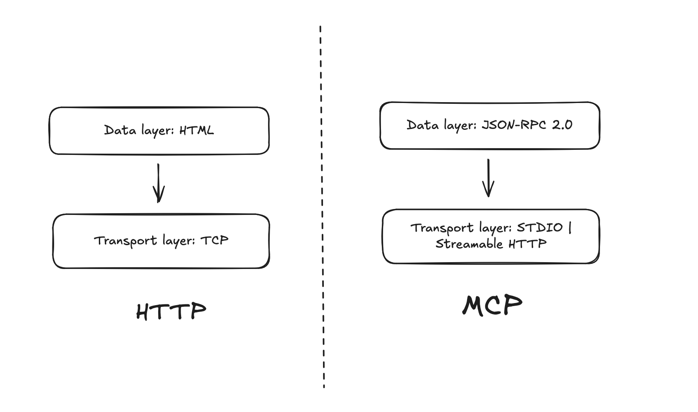

The explainer. What MCP is, how it works, and what the pieces do.
MCP is a protocol, like HTTP, UDP, TCP → at the very core, it is an agreement on how 2 nodes, systems will communicate with each other if they are both subscribing to the “model context protocol”.
The LLM app is the MCP host, and to connect to the world, it starts seeing all possible data sources, apps it wants to connect to as MCP servers, and to connect to them, it spins up individual MCP clients. If you’ve seen depictions of Durga — each arm wielding a different divine weapon, each purpose-built for a specific enemy — that’s essentially the architecture. One brain, many dedicated arms, each connected to its own tool.
Each MCP client maintains a dedicated connection with their MCP server — which is quite an interesting choice, I imagine maintaining so many connections is extra overhead for the LLM app.
And what are the MCP clients and servers exchanging? Context for the model.
Context ≠ a single request. Context = the evolving shared state between client and server across multiple exchanges.
It is a message from the MCP client in the LLM app to the MCP server but also some data, response from the MCP server to the client, and it is also not a single pass, but keeps getting built on — context is what is created and used when the client and server talk to each other. In the olden days it was HTTP requests, responses.
The Protocol Stack
HTTP as a protocol defines how data should be packaged and data is sent through TCP. So HTTP is the data layer and TCP is the transport layer.
MCP has both these parts defined as well, naturally.

As a developer, we could just learn the data layer and get away with our job. But if we do dive into the transport layer — things get interesting here.
STDIO: There is clear intention for MCP to be the LLM’s portal to the rest of the system/OS, because one half of the transport layer is the STDIO link, which makes access to processes running on the machine light-speed fast. This area is still unsolved as of now — an LLM cannot generally control the computer too well, and it will be interesting to see if the STDIO primitive suffices to enable the future of this space.
Streamable HTTP: The client and server need to talk a lot. This isn’t a one-off request — it’s a back and forth and back again. They need session state, conversation history, and an always-warm connection. LLM apps stream by nature: Claude, ChatGPT, they all send you words as they’re computed, not all at once. Tool use is expected to take time, and you want that app → tool back and forth without reconnecting each time. Streamable HTTP gives you that.
What Servers Expose
- Tools — executable functions that the LLM can ask to call
- Prompts — templates that guide the LLM’s interaction
- Resources — data sources: files, records, schemas
Imagine an MCP server for your company’s Postgres database. It exposes: a tool to run SQL queries, a resource containing the schema (so the LLM knows what tables exist), and a prompt with few-shot examples so it doesn’t write garbage SQL.
What Clients Offer Back
It is interesting what the client offers to the server — it shows how they are building for a world where onus is heavily on MCP servers to serve the client.
- Sampling: Say a GitHub MCP server needs to summarize a diff before deciding what to do next — instead of bundling its own LLM, it can ask the host LLM to do the thinking. This also grabs adaptability from servers: if Claude is differently intelligent to GPT, they would use the tool differently, and this feature takes that to the next level.
- Elicitation: Allows the server to talk to the user directly and get additional information — a bypass highway, straight from the MCP server to you. Elicitation lets the server say ‘hey, I need the human to answer something before I can proceed.’ All nodes deferring to each other.
- Logging: Get logs from server for monitoring.
An Experimental Primitive
Tasks (Experimental): Durable execution wrappers that enable deferred result retrieval and status tracking for MCP requests (e.g., expensive computations, workflow automation, batch processing, multi-step operations)
Eager to see if this will develop into a new protocol of its own and quash streamable HTTP.
For the opinion piece on what all this means: MCP is Just Plumbing (And That’s Fine)